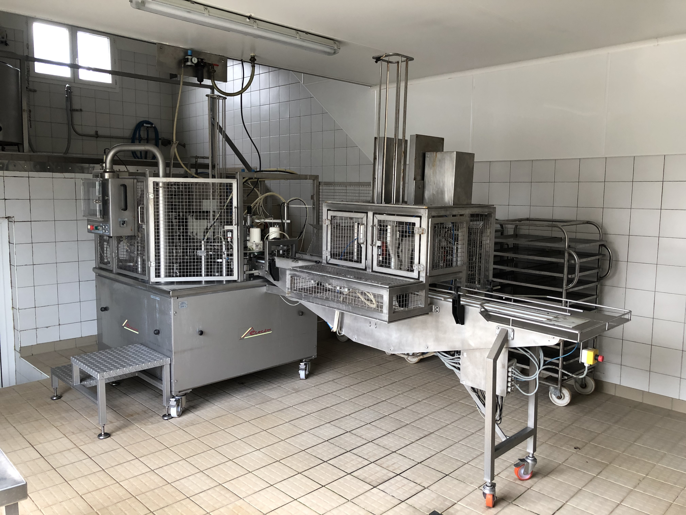
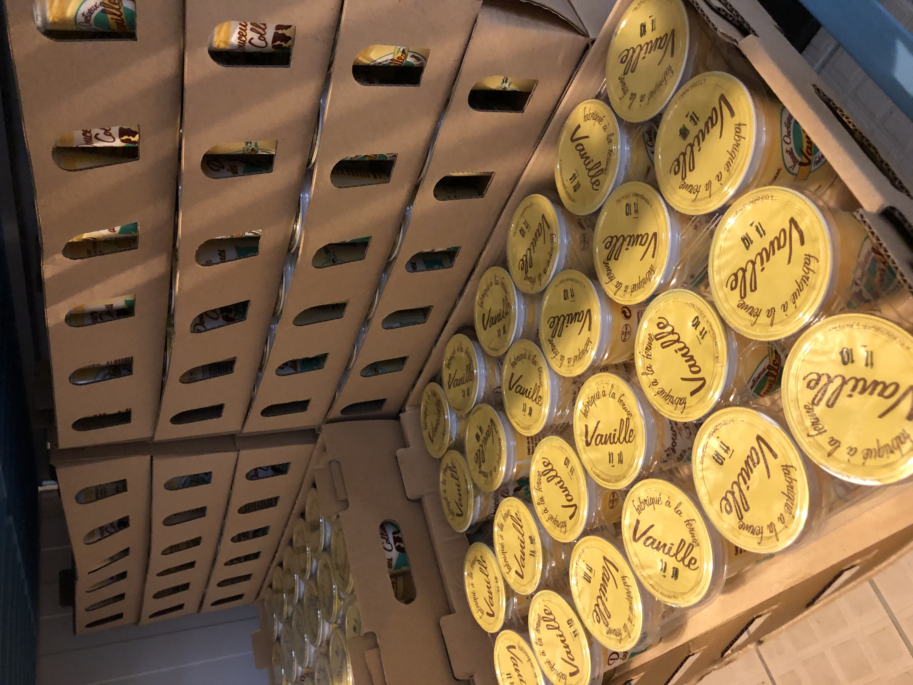

Nos produits
Trois pots. Toute la ferme dedans.

Yaourt fermier
Yaourt Nature.
Le yaourt fondamental. Texture ferme, juste l'acidité qu'il faut. Le goût du lait entier, et rien d'autre.
- Format
- Pack de 4 × 125 g
- Conservation
- 24 jours, +6°C max
- Composition
- Lait entier, ferments lactiques
- Sans
- Conservateur · poudre · épaississant
Pour 100 g
Énergie
67 kcal
Matières grasses
3,8 g
Glucides
4,7 g
Protéines
3,6 g
Sel
0,13 g

Yaourt fermier sucré
Yaourt Vanille.
Une note vanille douce, jamais sucrée à outrance. Un dessert de tous les jours qui ne déçoit pas les enfants et les grands.
- Format
- Pack de 4 × 125 g
- Conservation
- 24 jours, +6°C max
- Composition
- Lait entier, sucre (7%), arôme vanille, ferments
- Sans
- Conservateur · colorant
Pour 100 g
Énergie
98 kcal
Matières grasses
3,5 g
Glucides
11,5 g
Protéines
3,4 g
Sel
0,10 g

Crème non pasteurisée
Crème Crue.
Notre crème, telle qu'elle sort de l'écrémeuse. Non pasteurisée, thermoscellée pour la conservation, sans aucun ajout. Une crème vivante, pour la cuisine, la pâtisserie, ou simplement sur une tartine.
- Format
- Pot 20 cl
- Conservation
- 10 jours, +6°C max
- Composition
- Crème de lait crue
- Usages
- Cuisine chaude, pâtisserie, sauces, ou nature sur une tartine de pain de campagne
Pour 100 g
Énergie
327 kcal
Matières grasses
35 g
Glucides
2,8 g
Protéines
2,3 g
Sel
0,05 g
Envie de goûter
Nos produits sont en rayon près de chez vous.
Une quarantaine de points de vente entre l'Aveyron, le Cantal, le Lot et la région parisienne via les Halles de l'Aveyron.
Voir les points de vente